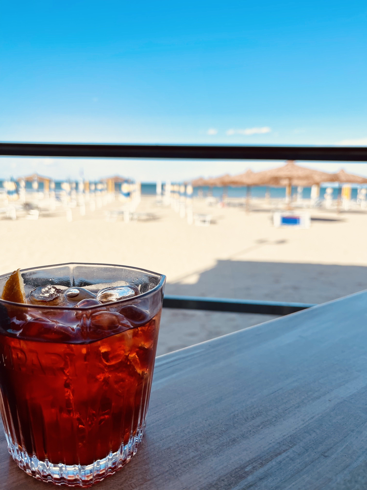
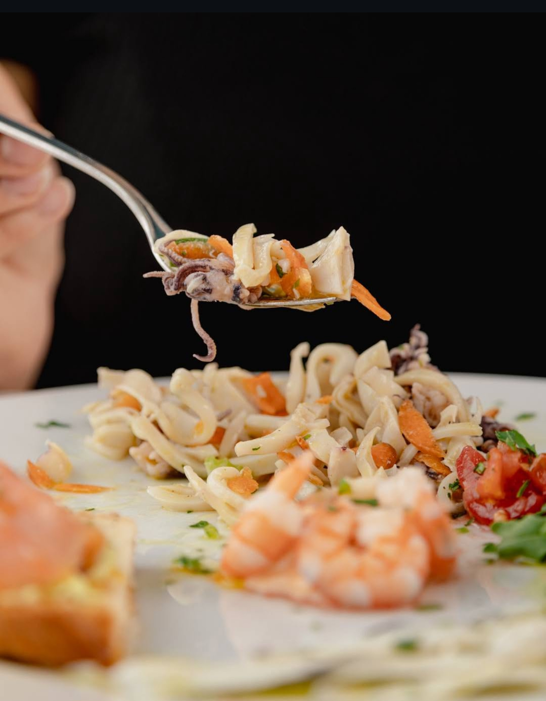
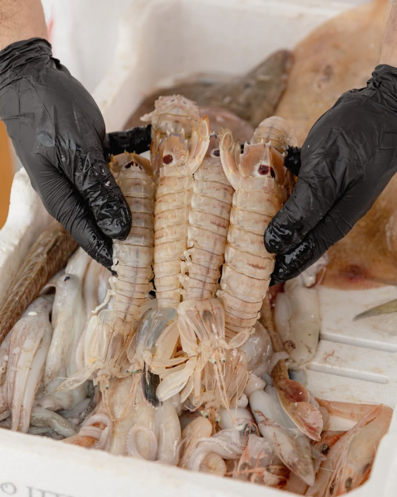

Benvenuto al Lido Barbanera!
Vieni a scoprire il miglior ristorante di pesce sulla spiaggia! Oppure ordina direttamente al bar dal tuo ombrellone e goditi la vista.
Scopri il Menù



Perché scegliere noi?
Piatti freschi e locali
Il miglior pesce fresco del mare direttamente sulla tua tavola.
Servizio in spiaggia
Ordina dal tuo ombrellone senza muoverti!
Recensioni eccellenti
Scopri cosa dicono i nostri clienti felici!